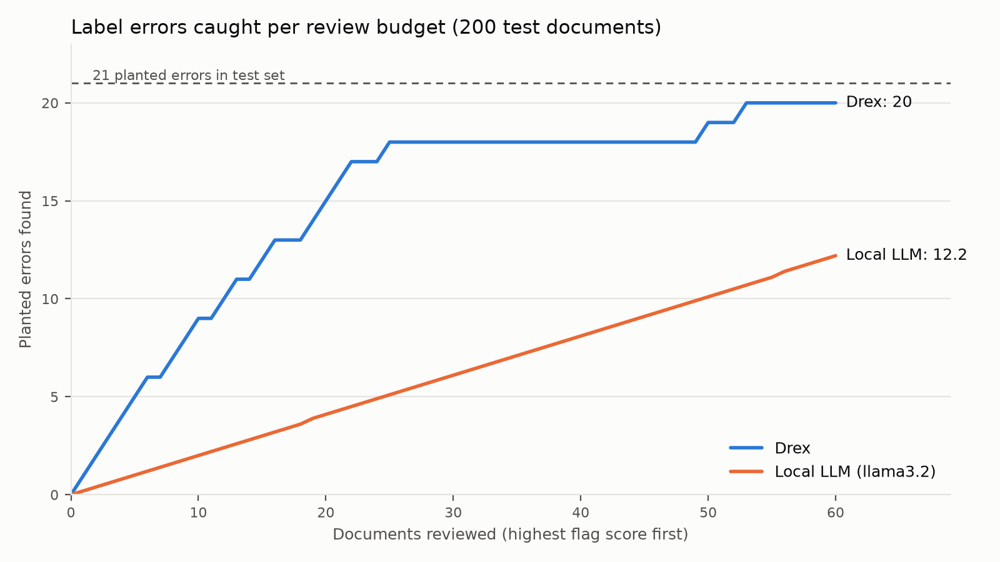

Cuckoo
NDI parses each scanned document, Drex classifies it without seeing its label,
and documents where Drex confidently disagrees with the given label are flagged for review.
A local open LLM runs the same task as a baseline. All figures below come from results/metrics.json.
Results on the test set
Top 20 flags: the review queue
Errors caught per review budget

Data: 300 RVL-CDIP scans (50 each of invoice, letter, form, resume, report, memo), 10% of labels deliberately flipped. Flag threshold chosen on a dev split; numbers reported on the held-out test split.